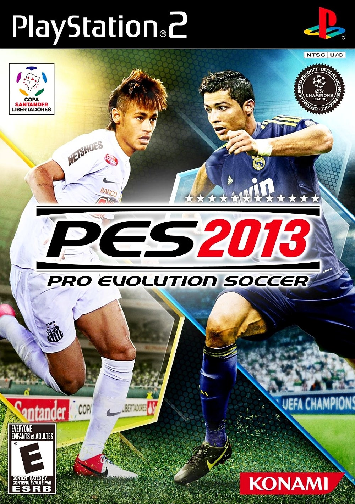
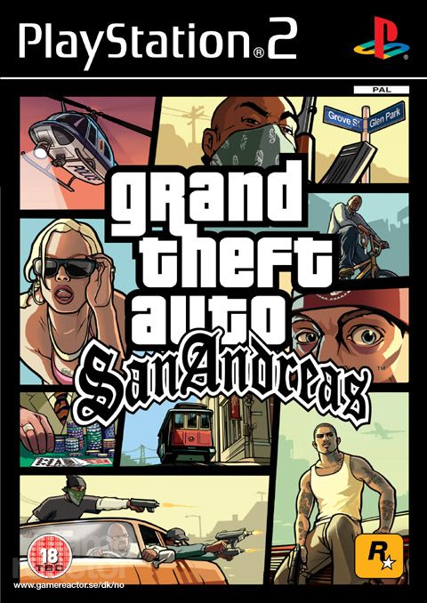
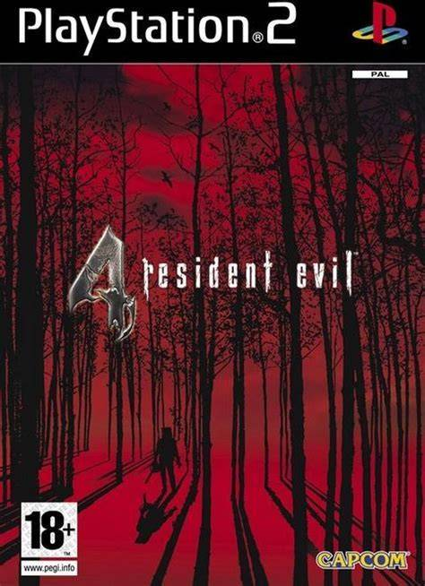
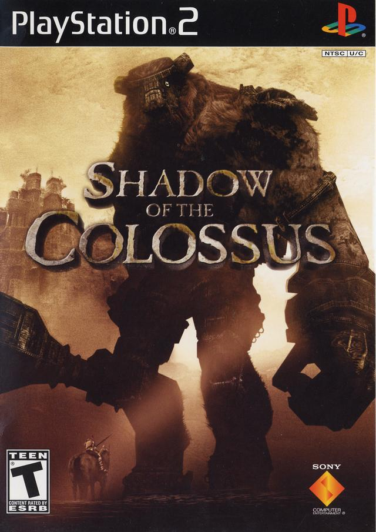

Pro Evolution Soccer 2013
رياضة / محاكاةتُعد هذه النسخة بمثابة الكأس المقدسة لعشاق العاب كرة القدم. لقد تميزت بميكانيكا لعب واقعية جداً وعمق تكتيكي لا يضاهى. بفضل تفاني مجتمع اللاعبين، يتم إصدار ملفات تحديث (Option Files) باستمرار لتعديل الأطقم والانتقالات، لتبقى هذه التحفة الكلاسيكية حية حتى اليوم.

God of War
أكشن / مغامراتاللعبة التي أسست لأسطورة "كريتوس". دمجت بين القتال العنيف السريع (Hack and Slash) وحل الألغاز المعقدة وسط أجواء مستوحاة من الأساطير اليونانية القديمة. استطاع المطورون استغلال معالج الـ PS2 لعرض زعماء بحجم شاشات كاملة وقتالات ملحمية مبهرة بصرياً.

Grand Theft Auto: San Andreas
عالم مفتوحمغامرة CJ في ولاية سان أندرياس الشاسعة هي إنجاز برمجي مذهل. دمج ثلاث مدن ضخمة مع غابات وصحاري ومئات المركبات داخل قرص DVD واحد كان بمثابة سحر تقني، مانحاً اللاعبين حرية مطلقة غيرت مسار ألعاب العالم المفتوح للأبد.

Resident Evil 4
رعب البقاءاللعبة التي أعادت تعريف منظور الشخص الثالث وألعاب رعب البقاء. بفضل محركها القوي وزوايا التصوير المبتكرة، قدمت تجربة سينمائية مرعبة ومثيرة، ولا تزال تُدرس حتى اليوم في مناهج تصميم الألعاب كمعيار ذهبي لتوازن الحركة والرعب.

Metal Gear Solid 3: Snake Eater
تخفي / تجسستحفة "هيديو كوجيما" التي نقلت سلسلة التجسس إلى أدغال الاتحاد السوفيتي. تميزت اللعبة بنظام بقاء مبتكر يتطلب معالجة الجروح وصيد الحيوانات للأكل، مع قصة سينمائية عميقة وتصميم مراحل يختبر ذكاء اللاعب ومهاراته في التخفي.

Shadow of the Colossus
مغامرات / فنيلعبة فريدة من نوعها تتكون فقط من معارك ضد زعماء عمالقة (Colossi). برمجياً، اللعبة تعتبر معجزة على جهاز PS2 بسبب المحاكاة الفيزيائية لحركة العمالقة وتأثيرات الإضاءة المذهلة، مما جعلها تُصنف كواحدة من أعظم الأعمال الفنية في تاريخ الألعاب.

Need for Speed: Most Wanted
سباقات / مطارداتالجزء الأكثر شعبية في تاريخ سلسلة ألعاب السباقات. دمجت اللعبة بين متعة التعديل على السيارات (Tuning) والمطاردات البوليسية الملحمية في عالم مفتوح، مع مؤثرات بصرية وصوتية جعلت من كل سباق تجربة تحبس الأنفاس.

Bully
عالم مفتوح / مغامراتمن تطوير استوديوهات Rockstar، تأخذك هذه اللعبة إلى عالم المدرسة الداخلية للعب بشخصية "جيمي هوبكنز". تميزت بنظام حياة يومي يتضمن حضور الحصص، التفاعل مع الفصائل الطلابية المختلفة، ومحرك فيزيائي مميز للمشاجرات اليدوية.

Devil May Cry 3: Dante's Awakening
أكشن سريععادت السلسلة إلى جذورها مع هذا الجزء الذي قدم نظام قتال هو الأسرع والأكثر تعقيداً على الجهاز. بفضل استجابة التحكم المثالية وتعدد أساليب القتال (Styles)، أصبحت هذه اللعبة المرجع الأساسي لألعاب الأكشن السريعة المتطلبة للمهارة العالية.

Silent Hill 2
رعب نفسيأيقونة الرعب النفسي التي استخدمت الضباب (Fog) بذكاء لإخفاء محدودية قدرات الجهاز الرسومية، محولة إياه إلى عنصر رعب أساسي. اللعبة تعتمد على سرد قصصي غامض، وتصميم صوتي مرعب يضع اللاعب تحت ضغط نفسي مستمر طوال فترة اللعب.